Prepare
Minimum requirements
To feel comfortable working with your Drupal template your hosting should match the engine requirements. Most of the hosting companies match the standards. However, there can be exceptions, that is why you should check the following properties.
Disc space
Minimum Drupal installation requires 15 Mb of free disc space. Websites, that contain a number of templates and modules require at least 60 Mb. Keep in mind that you will need more space for the files uploaded by users, media, backups and other files.
Web-server
Apache, Nginx or Microsoft IIS.More information about the requirements for server
Database
MySQL 5.0.15 or higher with PDO, PostgreSQL 8.3 or higher with PDO, SQLite 3.3.7 or higher.
When installing Drupal, please note that some of the modules may not support PostgreSQL and SQLite databases, in addition, template configuration and sample data are stored in MySQL format. That is why it is recommended to use only MySQL database.
PHP
PHP 5.2.5 or higher (5.3 recommended).PHP requirements in details
Downloading Drupal engine
In case the Drupal engine is already downloaded/installed, skip this step.
The first step of Drupal website building is downloading the engine from the official website http://drupal.org/.

Following the link above you can download zip- or tar.gz-archive with the core files.
In order to download the latest Drupal version, click the Download Drupal X.XX button, where X.XX - the latest version number.
In case you are looking for the older Drupal version, follow this link Other Releases:

In the API Version field, select the required branch on Drupal versions and click Apply:

After that, you will see the full list of the versions branches, where you can download the required version.
Please, check the template requirements regarding the version compatibility and make sure to download the correct version.
Extracting the files
When you are done with the downloading, you need to extract the files and folders from the engine package.
To extract the files from the Drupal engine ZIP package, you can use any archive manager that can handle ZIP archives, like WinZip (PC), StuffitExpander (MAC) etc.
The following tutorials will show you how to extract files WinZip (PC) and StuffitExpander (MAC).
Attention! In case your hosting control panel includes the "Extract" option, you can upload the .zip package to your server and extract the files there.
Uploading Drupal to a server
In case you have extracted the files locally on your computer, you need to upload them to a hosting server.
Drupal engine should be uploaded to the root directory of your hosting-server. Usually it is named WWW or public_html. If you do not know the root directory name, please, contact your hosting provider for more information.
In order to upload the files to a server, you can use any file manager software like FileZilla, TotalCommander etc. There is also a number of browsers add-ons (e.g. FireFTP for Mozilla Firefox). Also, some of the hosting providers offer the file manager option. Please, check your control panel or contact your hosting provider for more details.
Feel free to check the video tutorial How to upload files to a server or How to upload files to a server using cPanel (WebHost Manager, WHM).
Creating a database
As it was mentioned above, Drupal installation requires MySQL database. Database can be created in your hosting control panel
You can contact your hosting provider in order to get some help creating a database.
During the database creation process you will get the following details:
- Database server name or hostname.
- Database name.
- Database username.
- Password
Please, note these details. You will need them during the installation process.
Feel free to check the following instructions:
Drupal engine and theme installation
In this part you will see different ways of Drupal engine and theme installation. Please, follow this instruction if the Drupal is not installed to your server yet.
Before you proceed, you need to decide if you want to install Drupal with sample data included or not. Template sample data will make your website look exactly the same way as our demo template. You will receive all the modules, text-blocks, media files installed.
If you are not ready to install sample data, please proceed to the step "Installing Drupal theme without sample data". You can also install it later. Please, check the chapter "Installing Drupal theme with sample data over the existing website".
Installing Drupal theme with sample data
Sample data demo profile should be uploaded to a server BEFORE you install the Drupal engine!
In order to install your theme including sample data, follow the steps listed below:
- Upload sites/ folder from your template package to the root folder of your Drupal installation. You can replace the existing files. The folder contains theme files, modules, libraries, media files, etc.
- Upload sources/demo_profile/ folder from the template package to profiles/ folder of your Drupal installation. This folder contains a profile, that includes sample data.
- Upload sources/install.inc file from the template package into includes/ folder of the Drupal installation. You need to overwrite the existing files.
- Upload sources/system.install file from the template package to the modules/system/ folder of your Drupal installation. You need to overwrite the existing file.
Replacement of these files will add a new option to the installation process so it will not affect your installation in any way.
- In order to start the installation process, enter your website URL in a browser's address bar.
- On the initial setup page you will be prompted to select the installation profile. Choose Demonstration site and click Save and Continue:

- Follow the instructions on the screen to install Drupal engine. Fill in the fields with your database name, username, password and hostname of the earlier created database.
- On the Choose snapshot step select the snapshot as it is shown on the image below and click the Restore button.
In order to make your site look exactly like our demo template it is important to install the snapshot.

Snapshot is a copy of a database that contains sample data and also a file with info about modules used in this template. The snapshot is in MySQL database format.
- Click the link Visit your new site.

To login as website administrator use the following details: username: admin; password: admin123. We recommend that you change your password immediately after installation for security reasons.
- Drupal installation is almost completed. The last thing to do is to update the database tables. In your browser address bar type http://www.example.com/update.php, where www.example.com is your website URL.
- Follow the instructions on the screen.
- After the update is done, follow one of the links: Front page or Administration pages.
Feel free to check the following instructions:
Installing Drupal theme without sample data
Follow the instructions listed below in order to install the template without sample data:
- Upload the content of sites/all/themes/ folder from the template package to sites/all/themes/ folder of your Drupal installation on your server.
Please, note, that some of the theme elements are made using modules. On the current installation step the front-end layout and theme functionality may differ from the one you have seen on the live demo, because the modules are not turned on.
- In order to install modules, upload sites/all/modules/ folder and sites/all/libraries/ folder from the template package to the sites/all/ folder of your Drupal installation. You can skip this step if you do not want to use the default template modules.
- Type your domain name in your browser’s address bar to start Drupal installation procedure.
- Follow the instructions on the screen. Fill in the following fields: database name, username, password and host name.

- Register site administrator
- Log in the back-end using administrator access details registered during the installation process.
- From the top menu select Appearance or type http://www.example.com/?q=admin/appearance in the browser address bar, where www.example.com is your website URL.
- Locate your installed theme and click Enable and set default.

- In case you have uploaded the modules folder on the second installation step, select Modules tab from the top menu or type http://www.example.com/?q=admin/modules in the browser address bar, where www.example.com is your website URL. Activate the modules. Modules configuration can be done up to your needs.
Feel free to check the following instructions:
Installing Drupal theme with sample data over the existing website
Installing the theme sample content over the existing Drupal installation will erase all your website content and replace it with the sample one!
We highly recommend that you backup your database before installing the theme using snapshot.
If you have a running Drupal website and still want to install the theme with sample data please follow the instructions listed below:
- Upload the content of sites/all/ folder from your template package to sites/all/ folder of your Drupal installation.
- Upload the content of sites/default/ folder from the template package to sites/default/ folder of your Drupal installation.
Be careful replacing the files! DO NOT replace the "settings.php" and "default.settings.php" files, or you will have to re-install the Drupal engine!
- Upload sources/demo_profile/ folder from the template package to profiles/ folder of your Drupal installation. This folder contains the profile, that will let you install demo data.
- Login to Drupal website as administrator.
- In the admin panel go to Configuration -> File system or follow the link http://www.example.com/?q=admin/config/media/file-system, where www.example.com is your website URL.
- In the Private file system path field set the value sites/default/private/files.
- In the admin panel open the Modules page or follow the link http://www.example.com/?q=admin/modules, where www.example.com is your website URL.
- Make sure, Demonstration site module is on.
- In your admin panel go to Structure -> Snapshots page and navigate to Reset tab or follow the link http://www.example.com/?q=admin/structure/demo/reset, where www.example.com is your website URL.
- Select the snapshot theme###, where ### - your theme number.

- Click the Reset button. Confirm the action.
- Login to the site as administrator.
In order to log in the back-end after the installation, use the following access details: username: admin; password: admin123. We recommend that you change your password immediately after installation for security reasons.
- The last thing you need to do is to update database tables. In the browser address bar type http://www.example.com/update.php, where www.example.com is your website URL.
- Follow the instructions on the screen.
- After the update is done, follow one of the links: Front page or Administration pages.
Feel free to check the following instructions:
Installing Drupal theme without sample data over the existing website
In order to install Drupal theme over the existing website without sample data, follow the instructions listed below:
- Upload the content of sites/all/themes/ folder from the template package to sites/all/themes/ folder of your Drupal installation.
Note, that some of the theme elements are made using modules. On the current installation step the front-end layout and theme functionality may differ from the one you have seen on the live demo, because the modules are not turned on.
- In order to install the modules, upload the sites/all/modules/ folder and sites/all/libraries/ folder from your template package to sites/all/ folder of your Drupal installation. Skip the step if you do not want to use the default template modules.
- Login to the site as administrator.
- In your admin panel navigate to Appearance page or type http://www.example.com/?q=admin/appearance in the browser address bar, where www.example.com is your website URL.
- Locate your installed theme and click Enable and set default.
- In case you have uploaded the modules folder on the second installation step, select Modules tab from the top menu or type in the browser address bar http://www.example.com/?q=admin/modules, where www.example.com is your website URL. Activate the modules. Modules configuration should be done up to your needs.
Feel free to check the following instructions:
Configuration
Drupal based site contains a number of site settings together with its elements settings. In this part we will overview only the main settings types.
Drupal settings
You can check the full list of settings by clicking the Configuration tab in the administration section, or type http://www.example.com/?q=admin/config in the browser address bar, where www.example.com is your website URL.
In order to change the default site settings, follow the steps listed below:
- Navigate to Configuration -> Site information page in the administration panel or type http://www.example.com/?q=admin/config/system/site-information in the browser address bar, where www.example.com is your website URL.
-
Change the required parameters:
- Sitename;
- Site slogan;
- Site email address;
- The number of blog posts per Blog page (or main page, if there are any posts attached to the main page);
- Website main page URL;
- 403 page's URL (access denied);
- 404 page's URL (page not found).
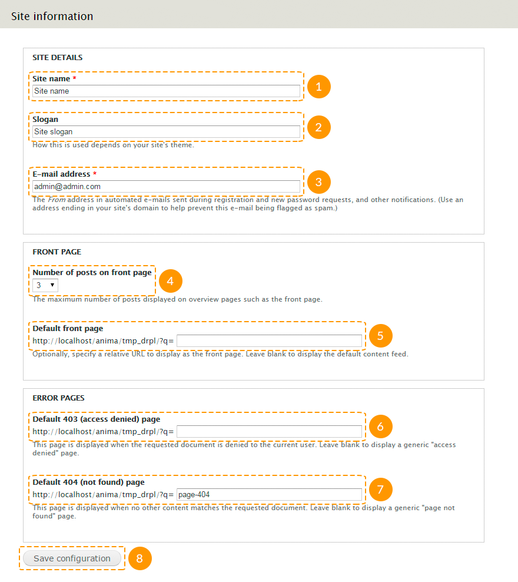
- After making necessary changes, click Save configuration.
Theme settings
Every theme includes own list of settings.
In order to change theme settings, follow the steps listed below:
- In your website administration panel navigate to Appearance tab or type http://www.example.com/?q=admin/appearance in the browsers address bar, where www.example.com is your website URL.
- Click the Settings link under your theme name:
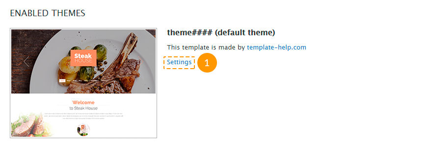
-
On the General Settings tab you can set the following parameters:
- show/hide logo, sitename, slogan, posts authors avatars, comments authors avatars, comment's author pending review, featured icon, main and secondary menu;
- use the default theme logo or upload the custom one;
- use the default theme favicon or upload the custom one;
- stick the menu at the top of the browser window.
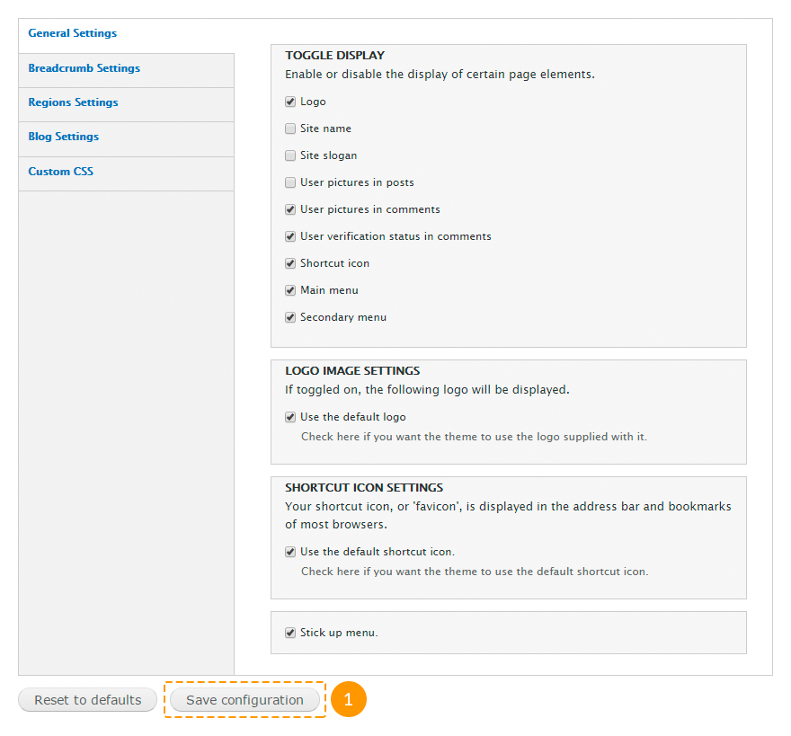
-
On the Breadcrumb Settings tab you can set the following parameters:
- show/hide "breadcrumbs";
- show/hide "breadcrumbs", if it only contains link to the main page;
- set the divider between "breadcrumbs" links.

- On the Blog Settings tab you can set a blog page title. Leave the field empty for the blog title to coincide with the naming of the corresponding menu link.

- On the Custom CSS tab you can set custom styles for the theme installed.

This option refers to the purchased theme. You cannot set any styles for the other themes, such as Seven etc.
Block settings
Follow the instructions listed below in order to configure your blocks:
- Login to your site administrator area.
- Open the page Structure -> Blocks in your Drupal admin panel or type the following address in the browser address bar http://www.example.com/?q=admin/structure/block, where www.example.com your website URL.
- You can move blocks to different regions by using drag-and-drop method on this page.

- You can move blocks using the drop-down menu in the Region column:

- It is possible to configure single blocks one-by-one, by choosing the item configure in the Operations column:

-
The following parameters can be set at the block settings page:
- block header;
- the block's custom CSS-class;
- block's region for each separate theme;
- view settings (for different pages, content types, user roles or separate users);
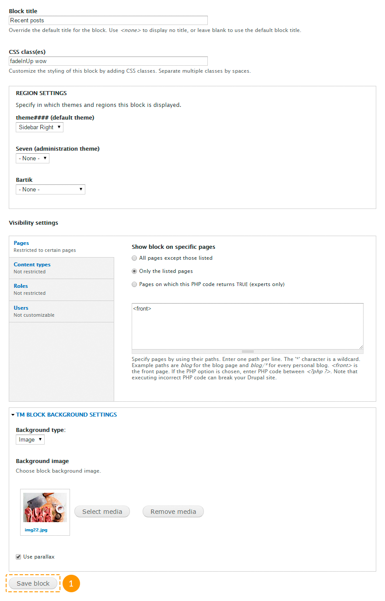
Some blocks may include additional settings.
- On the other hand you can open the block's settings page directly from your site pages. In order to do this please roll-over the needed block with your mouse cursor, press on the gear wheel icon at the top right corner of the block and choose the option Configure block. This option will be available only for the logged in user with the administrator rights:

Module settings
Our templates include the following modules:
- AddThis - adds "Share" button for the social networks;
- Administration menu - is the convenient alternative for the top administrative menu;
- Block Class - allows to add users class on the block;
- Cctags - allows to create a tagcloud;
- Colorbox - allows to add lightbox feature for the images;
- Demonstration site - allows to create a databases backup;
- Flex Slider - adds a slider;
- Media, Media: Vimeo, Media: YouTube - allows to add not only images, but also video and audio files into content type;
- Menu block - allows to duplicate menu;
- Module Filter - allows to add modules filtering in the administration panel;
- Olark Chat - allows to add a live chat feature;
- Panels - allows to create pages;
- Rate, Voting API - allows to add ratings on the content type page;
- Retina Images - allows to crop the images for retina-screens with 2x size;
- Simple Google Maps - allows to add Google-maps based on the address;
- Superfish - adds drop-down menus;
- TM Follow - creates two blocks with the links, that link the website and its users with the social networks;
- Views, Semantic Views, Views Isotope, Views Slideshow - allows you to create a sampling of content types, comments, users, and to represent them in the form of blocks and pages;
- Wysiwyg - adds a visual editor;
- and others.
Each module contains its own settings. In order to set up the module, follow the steps listed below:
- Login to your site administrator area.
- Navigate to Modules tab or type http://www.example.com/?q=admin/modules in the browser address bar, where www.example.com is your website URL.
- Locate the module. You can use module filters to find the right one.
- Click Configure link next to the module.

- Make necessary changes and save the settings.
Feel free to check the following instructions:
Content management
In this chapter we will overview the way of creating content, also find out how to manage different types of content in case you have installed the sample data.
Menu management
The following menu types can be used in the template:
- Main menu contains the links to the main website pages;
- User menu contains the links, connected to the users profile, such as "Register", "Login", etc.;
- Footer menu duplicates main menu.
Let's overview each of them in details.
Main menu
In order to edit main menu items, follow the steps listed below:
- In the admin panel navigate to Structure -> Menus or type http://www.example.com/?q=admin/structure/menu in the browser address bar, where www.example.com is your website URL.
- Click the List links button next to the menu item.

- To add an item, click Add link at the top of the page.

- To edit the item, click Edit.

- To remove the item, click Delete.
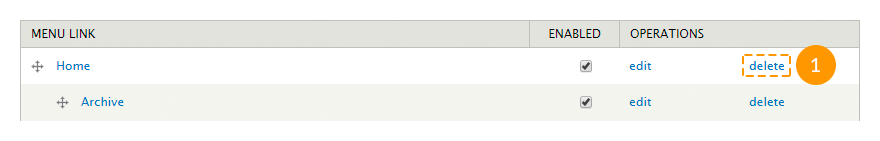
- To change the items order, use the drag-and-drop method to place the item, then click Save configuration.

To set up drop-down menu, follow the steps listed below:
- In the admin panel navigate to Structure -> Blocks or type http://www.example.com/?q=admin/structure/block in the browser address bar, where www.example.com is your website URL.
- Locate the block with the menu's name.
- Click Configure link next to this block.
- Make changes in Superfish settings section.
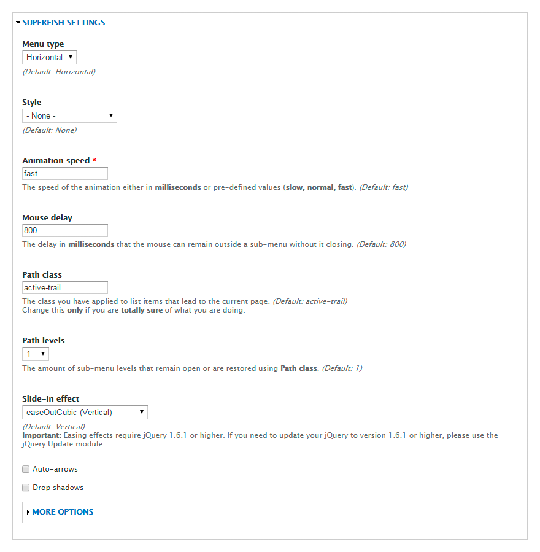
- Click Save block button.
In order to change the menu location, follow the steps listed below:
- In the admin panel navigate to Structure -> Blocks or type http://www.example.com/?q=admin/structure/block in the browsers address bar, where www.example.com is your website URL.
- Locate the block with the menu's name.
- Move the menu block to the needed region, the same way as the regular block.
- Click Save blocks button.
User's menu
User's menu is a standard Drupal menu. It does not include any drop-down menus. To edit the menu or change its location, you can use the same instructions, that are used for the main menu.
Footer menu
Footer menu duplicates main menu. To set up this menu, follow the steps listed below:
- In the admin panel navigate to Structure -> Blocks or type http://www.example.com/?q=admin/structure/block in the browser address bar, where www.example.com is your website URL.
- Locate the block with the menu's name.
- Click Configure button next to the block.
-
On the opening page, besides the standard block fields, fill in the following fields:
- Menu - the name of the menu, that needs to be duplicated;
- Starting level - block visibility on a page. Blocks, that start with the first level, will always be visible. Blocks, starting from the second level or higher, will be visible only on the pages, where these menu items are active.
- Maximum depth - the number of the visible menu levels. Set 1, to disable all the sub-menus.

- Click Save block button.
Feel free to check the following instructions:
Content type management
The template includes the following main content types:
- Banner represents a company name, logo and additional information. Can be used in "Our partners", "Our clients" blocks, and others;
- Employee consists of an employees photo and some information. Can be used in "Our team", "Our staff" blocks, and others;
- FAQ represents the content type in a 'question-answer' format. Is it used on a "Frequently asked questions" page;
- Map Consists of the address field and short information. Can be used as the Google map on the Contacts page. In order to change the map on the Contacts page, edit the "Our location" content type;
- Portfolio item consists of the header, an image and short description. Can be used on "Portfolio", "Gallery", "Services" pages;
- Service consists of the header, an image and short description. Can be used in "Services" blocks, and others;
- Slide consists of the header, an image and short description. It is used on the main page in slideshow;
- Testimonial - contains the short feedback and the information about its author. Can be used in "Testimonials", "What people say about us" blocks.;
- and others.
Any changes made in these content types (adding, editing, deleting) instantly appear on the blocks or pages, where they are used.
Some of the modules contain own content types. For example, Panels module contains Panel content type.
You can also create own content types.
In order to edit, remove or manager the content type, follow the steps listed below:
- In order to check the complete list of the content types, navigate to Content tab in your admin panel, or type http://www.example.com/?q=admin/content in the browser address bar, where www.example.com is your website URL.
- In order to create a new node of a content type, click the Add content link.

- On the opening page select a content type.

- Fill in the required fields and click Save button.
- In order to edit the existing node of a content type, on the Content page in the Show only items where field select the content type and click Filter button.

- In order to edit the node of a content type, click the Edit link next to its name.

- In order to delete some node of a content type, click the Delete link next to its name.

Feel free to check the following instructions:
Page management
All the templates pages are made with the help of Panels module.
To manage the pages, follow the instructions below:
- In order to check all the existing pages, navigate to Structure -> Pages in your admin panel, or type http://www.example.com/?q=admin/structure/pages in the browser address bar, where www.example.com is your website URL.
- In order to create a new page, at the top of the opening page click Add custom page.
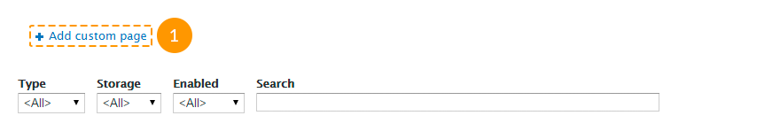
- Follow the instructions on the screen, fill in all the required fields, save the changes.
- In order to edit the existing page, click the Edit link next to its title.

- In order to remove the page, click Delete at the top of the page in the editing mode.
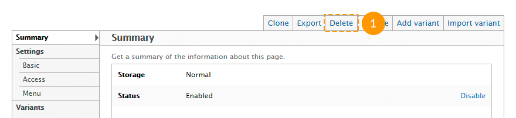
Feel free to check the following instructions:
View management
Most of the templates content is made with the help of views, such as:
- Archive takes content type "Blog entry", arranges them by months and displays them in a block or page mode.
- Banners takes content type "Banner" and displays them in a block mode.
- Categories takes taxonomy terms from the "Blog categories" dictionary and outputs them in a block mode.
- FAQs takes content type FAQs and outputs them in a page mode.
- Portfolio takes content type "Portfolio Item" and outputs them in a Portfolio (Gallery, Services) page mode using two, three or four columns.
- Portfolio filter creates a portfolio filter, can be used in "Portfolio" view.
- Recent comments takes comments and outputs them in a block or page mode.
- Recent posts takes content type "Blog entry" and outputs them in a block mode.
- Slider takes content type "Slide" and outputs them in a block slider mode.
- Team takes content type "Employee" and outputs them in a block mode.
- Testimonials takes content type "Testimonial" and outputs them in a block or page mode.
- and others.
To manage the views follow the instructions below:
- To check all the existing views, navigate to Structure -> Views in the admin panel, or type http://www.example.com/?q=admin/structure/views in the browser address bar, where www.example.com is your website URL.
- To create a new view, click the Add new view link at the top of the opening page.

- On the opening page fill in the views name, content type, ordering type, how to display.
- In order to set additional parameters, click the Continue & edit button. To complete, click the Save & exit button.

- To edit the existing view, select Edit in the drop-down list under the exact view.
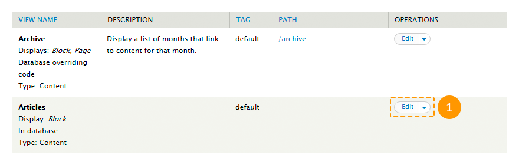
Do not make changes to the view, in case you are not sure what you are doing.
- To remove the existing view, select Delete in the drop-down list under the exact view.
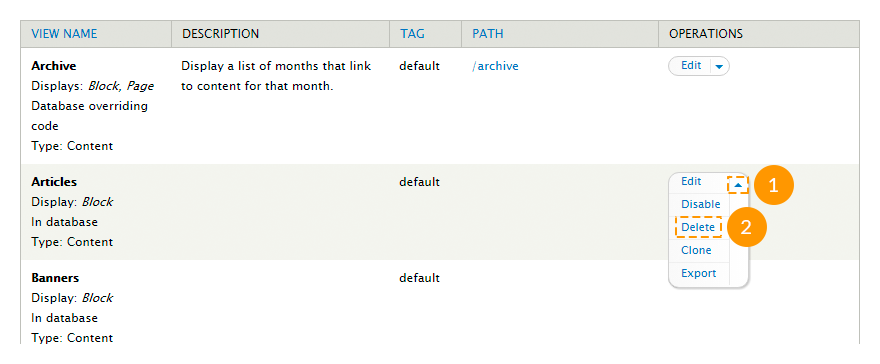
- Views that appear in a block mode can be managed same way as the regular blocks. On the other hand you can open the view block's settings page directly from your site pages. In order to do this, roll-over the needed block with your mouse cursor, press on the gear wheel icon at the top right corner of the block and choose the option Configure block:

- Views that are displayed in pages mode can be set up the same way. Roll-over the needed page part with your mouse cursor, press on the gear wheel icon at the top right corner of the block and choose the option Edit view:

Feel free to check the following instructions:
Media management
You can use the Media module in order to upload images and videos.
In order to manage the media, follow the instructions below:
- In order to check the full list of media files, navigate to Content tab in your admin panel and go to Media or type http://www.example.com/?q=admin/content/media in the browser address bar, where www.example.com is your website URL.
- In order to remove existing media files, check them, in the Operations filed choose Delete and click Submit.
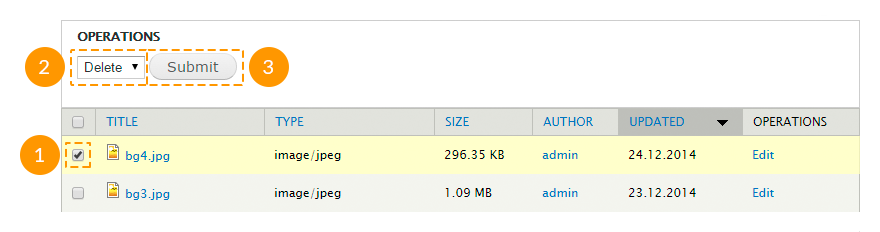
- In order to add a media file into the content type, click the Select media button in the editing mode of the content type.
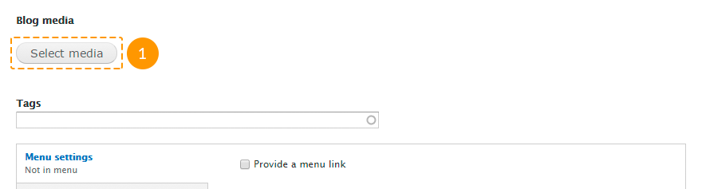
-
In the appeared window:
- in the Upload tab you can upload the image from your computer;
- in the Web tab you can set the link to an external image or a video from YouTube and Vimeo;
- in the Library tab you can select one of the images or videos, previously uploaded to your site.

Please, note, that you can add a video only to the Blog entry content type node.
Feel free to check the following instructions:
Olark live chart
In order to add the Olark-chat feature, same as on the live demo page, follow the steps listed below:
- Register on the official Olark website.
- Enter required data.
- Copy the code you receive.
-

1. Register on the official Olark website
-

Enter all the information required.
-

Copy the code you receive.
- Navigate to Configuration page in your admin panel, in the Web services tab select Olark settings. You can also get to this page following the link http://www.example.com/?q=admin/config/services/olark, where www.example.com is your website URL.
- Paste the code into Olark code field.

- Click Save configuration.
- In order to configure the chat, login to the Olark website, using your account access details.
Feel free to check the following instructions: